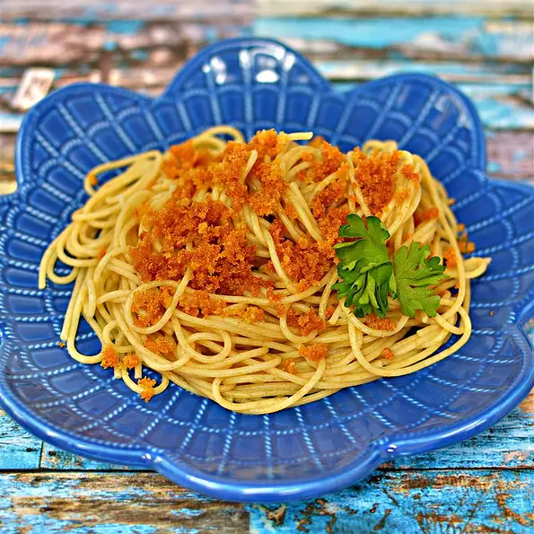

Poor Mamma's Spaghetti

What did Mamma do when her grocery money didn't stretch for real Parmesan cheese? She improvised, naturally. Being
a good cook, her meal eventually became famous, even dukes loved Mamma's spaghetti. And so will you. But pssst,
don't give away Mamma's little secret...
Ingredients
- 3 tablespoons olive oil
- 1 clove garlic, peeled
- 4 slices white bread, crusts trimmed
- 1 (8 ounce) package uncooked spaghetti
- freshly ground black pepper to taste
Steps
- Pour the olive oil into a skillet and set over medium heat. Add the garlic clove, and cook until the clove is browned. Remove the garlic from the oil, and finely crumble the slices of bread into the skillet. Cook until nicely toasted, then scoop out the crumbs onto a paper towel. Reserve the oil.
- Meanwhile, bring a large pot of lightly salted water to a boil. Add the spaghetti, and cook for about 8 minutes, until tender. Drain.
- Mix the reserved oil into the spaghetti, then place onto serving plates. Sprinkle with bread crumbs and freshly ground black pepper.